Infinium chemistry, β and M values, normalisation, probe filtering, cell composition and epigenome-wide association studies
Most human DNA methylation data do not come from sequencing but from Illumina Infinium arrays: hundreds of thousands of preselected CpGs, measured cheaply in thousands of people. Epidemiology, biobanks, epigenetic clocks and tumour classification all run on them.
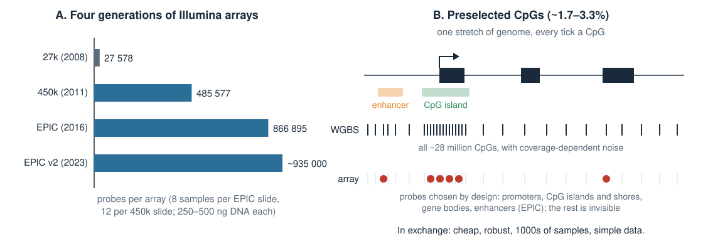
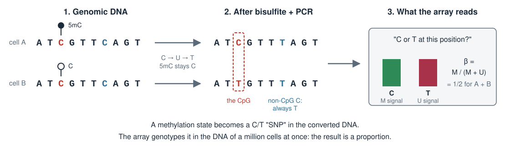
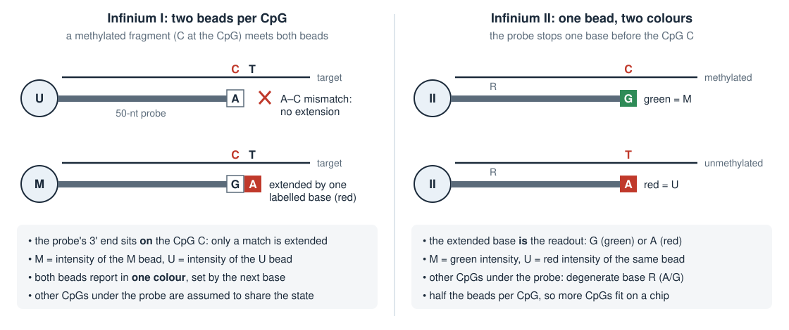
library(minfi)
targets <- read.delim(file.path(D, "gse42861_samples.tsv"))
targets$Basename <- file.path(D, "gse42861_idat", targets$basename)
rg <- read.metharray.exp(targets = targets) # RGChannelSet: red and green intensities per bead type
mset <- preprocessRaw(rg) # MethylSet: M and U per CpG
beta <- getBeta(mset, offset = 100) # beta = M / (M + U + 100)| object | rows | contains |
|---|---|---|
| IDAT files | — | two binary files per array (Grn, Red): mean intensity per bead type |
RGChannelSet |
622 399 addresses | raw red and green intensities, including control probes |
MethylSet |
485 512 CpGs | methylated (M) and unmethylated (U) signal per CpG |
GenomicRatioSet |
CpGs with positions | β, M values, genome coordinates |
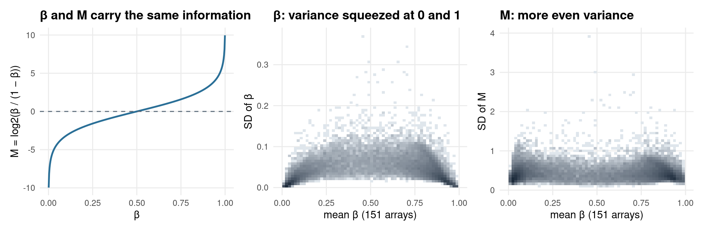
\beta = \frac{M}{M + U + 100} \qquad\qquad M\text{-value} = \log_2 \frac{M + 1}{U + 1} \approx \log_2 \frac{\beta}{1 - \beta}
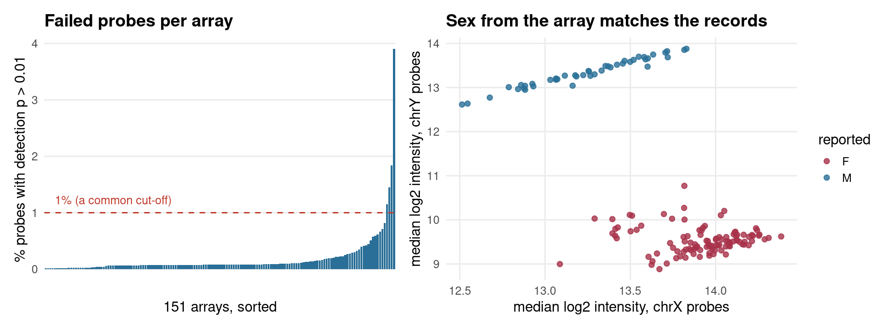
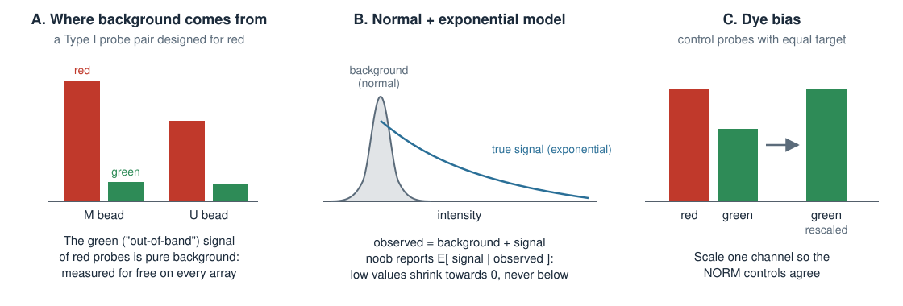
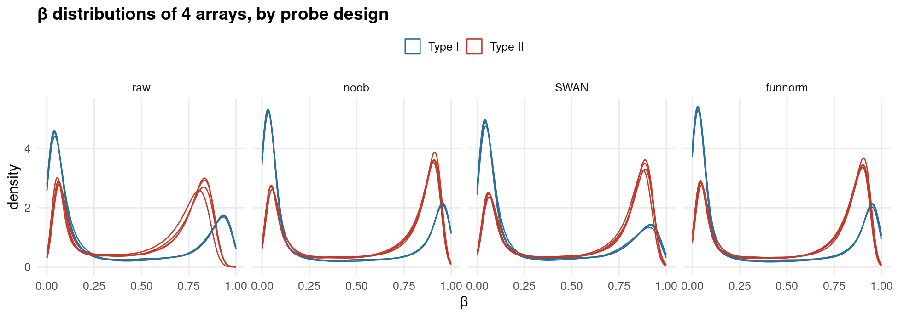
| method | type | assumption / use |
|---|---|---|
| noob | within array | background + dye bias; safe default; first step of most pipelines |
| SWAN, BMIQ | within array | Type I vs II design bias |
quantile (preprocessQuantile) |
between arrays | all arrays have the same β distribution: same tissue, small effects |
| functional normalisation | between arrays | technical variation captured by control probes; keeps real global differences (e.g. tumour vs normal) |
sesame (openSesame) |
within array | pOOBAH detection, noob, dye bias, masking; the default for EPIC v2 |
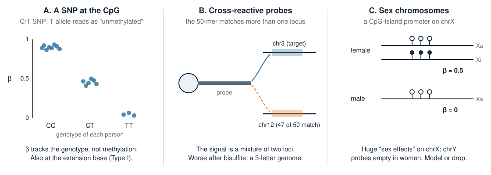
| RA patients | controls | |
|---|---|---|
| samples (14 BeadChips with both groups) | 79 | 72 |
| women / men | 61 / 18 | 46 / 26 |
| age (median) | 55 | 54 |
| current / ex / never / occasional smokers | 25 / 31 / 18 / 5 | 12 / 25 / 25 / 8 (2 unknown) |
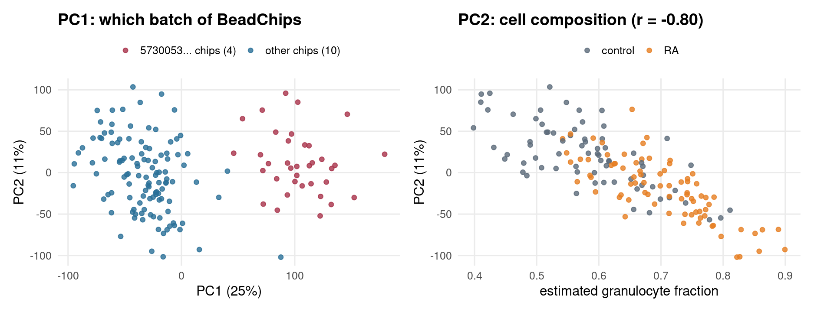
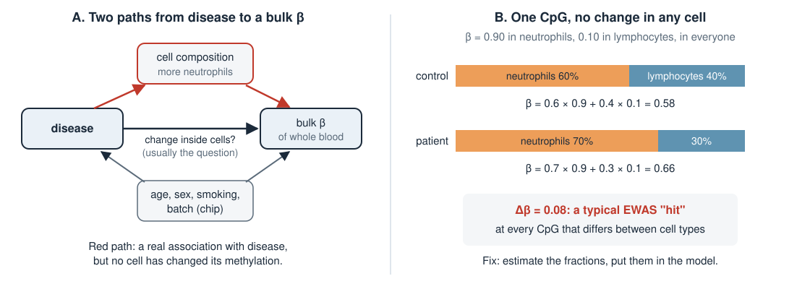
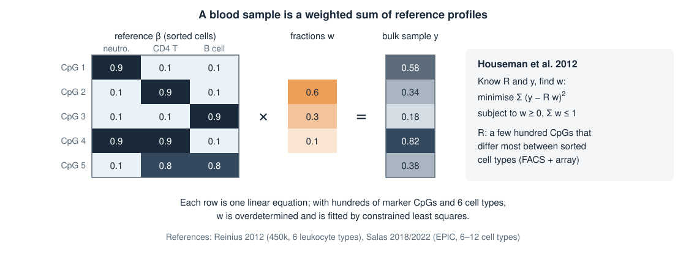
estimateCellCounts(rg, compositeCellType = "Blood"); EpiDISH and sesame offer the same idea with other references.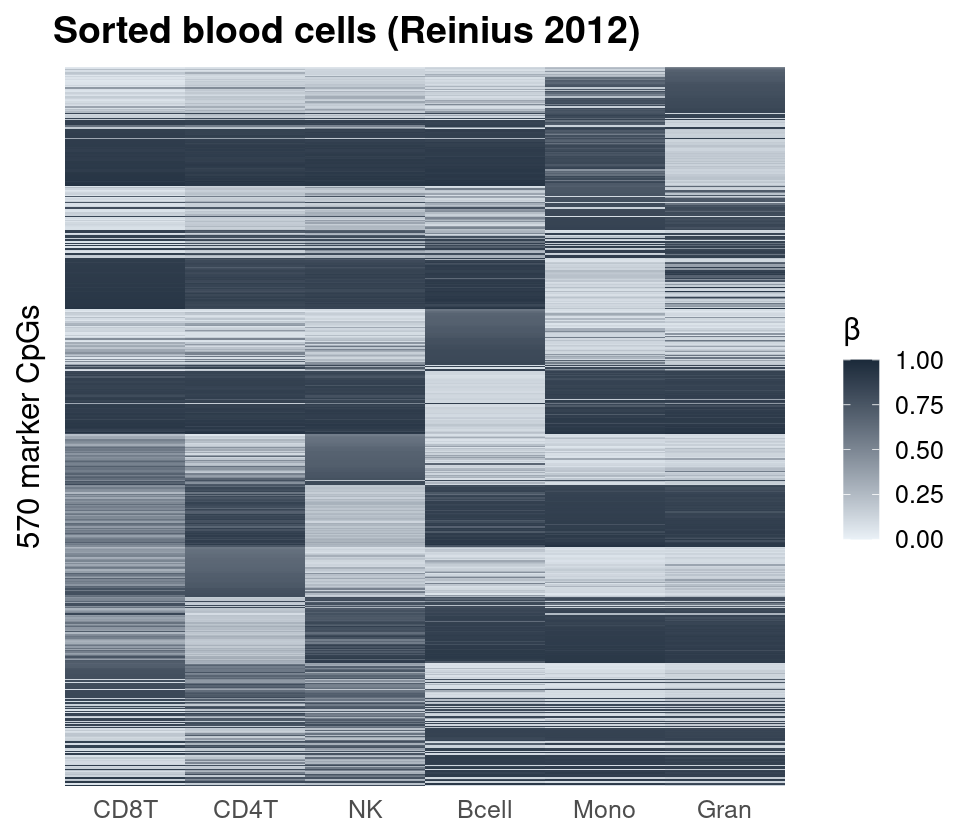
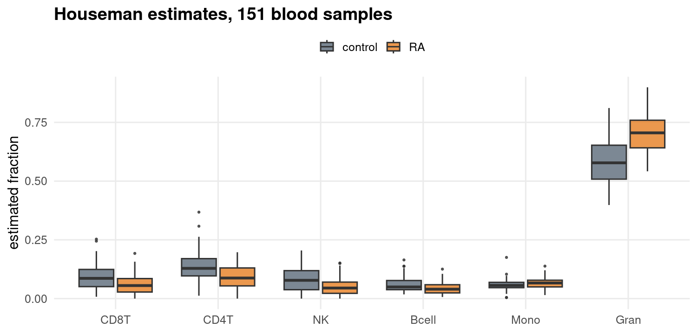
library(limma)
M <- log2(beta / (1 - beta)) # M-values, CpGs x samples (after filtering)
design <- model.matrix(~ status + age + sex + smoking + CD8T + CD4T + NK + Bcell + Mono, data = samples)
fit <- eBayes(lmFit(M, design))
res <- topTable(fit, coef = "statusRA", number = Inf)statusRA is the RA effect at fixed composition.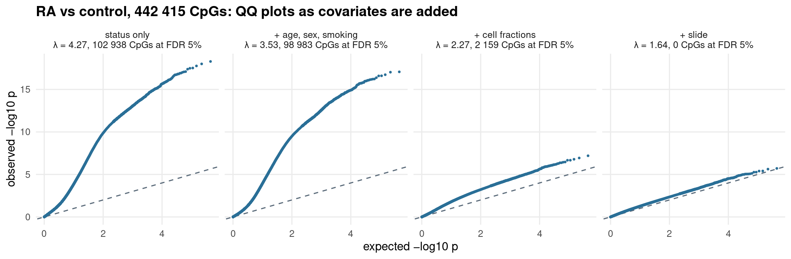
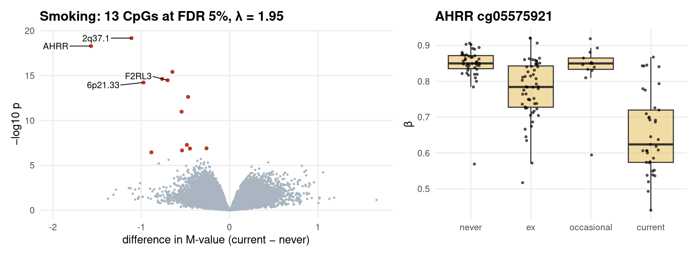
| step | minfi (this lecture) | alternatives |
|---|---|---|
| read IDATs | read.metharray.exp |
sesame::openSesame, meffil |
| QC | detectionP, getSex, control probes |
sesame pOOBAH, ewastools, meffil QC report |
| normalise | preprocessNoob, preprocessSWAN, preprocessFunnorm, preprocessQuantile |
wateRmelon::BMIQ, ChAMP |
| filter | detection p, Zhou masks, SNPs (dropLociWithSnps), sex chromosomes |
sesame masks (built in) |
| cell composition | estimateCellCounts (Houseman) |
EpiDISH, FlowSorted.Blood.EPIC, reference-free (RefFreeEWAS, SVA) |
| test | limma on M-values | DMRcate, bumphunter (regions), bacon (inflation) |
| idea | key fact |
|---|---|
| assay | bisulfite + Infinium genotyping chemistry; Type I (two beads) and Type II (two colours) |
| platforms | 27k → 450k (485 577) → EPIC (866 895) → EPIC v2 (~935 000); ~1.7–3.3% of CpGs |
| β and M | β = M/(M+U+100); M = log2 ratio; test on M, report Δβ |
| QC | detection p vs negative controls; sex from chrX/chrY; conversion controls |
| normalisation | noob (background, dye), SWAN/BMIQ (design), quantile/funnorm (between arrays) |
| filtering | failed probes, SNPs, cross-reactive (Zhou masks), sex chromosomes: 485 512 → 442 415 |
| composition | blood = mixture; Houseman deconvolution; RA: granulocytes 70% vs 58% |
| EWAS | limma per CpG with covariates; λ 4.27 → 1.64 and 102 938 → 0 hits as composition and chip enter |
| positive control | smoking: AHRR cg05575921, β 0.85 → 0.66 |
Not required reading and not examined. For those who want the primary literature.